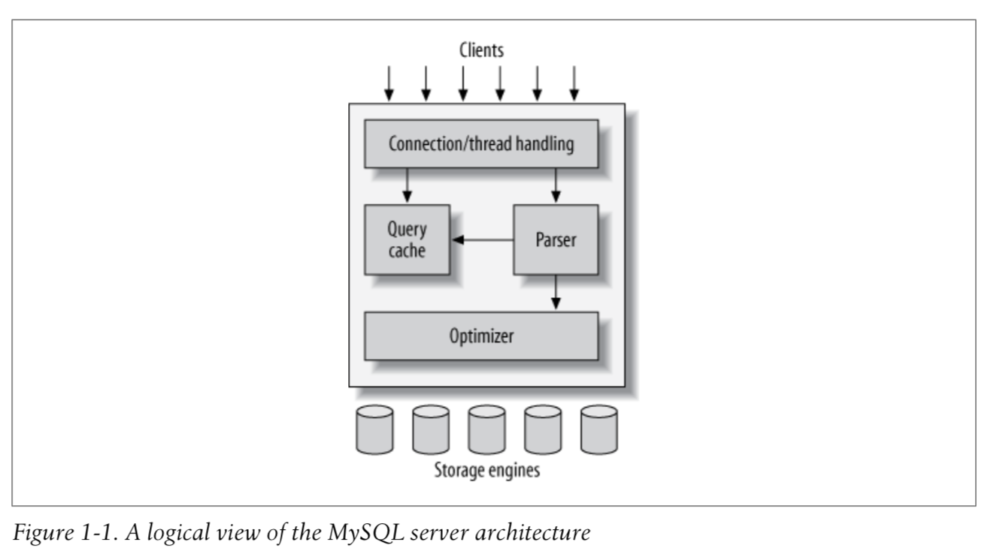

MYSQL's storage-engine architectur, whose design separates query processing and other server tasks from data storage and retrieval 
- the topmost layer services: connection handling, authentication, security and so forth
- the second layer, much of MySQL's brains are here: query parsing analysis, optimization, caching and all the built-in functions
- the third layer contains the storage engines.They are responsible for storing and retrieving all data stored in MySQL
- thread and thread pool: Each client connection gets its own thread within the server process.The server caches threads, so they don't need to be created and destroyed for each new connection
- security: Authentication is based on username, originating host, and password.Also across an SSL(Secure Sockets Layer) connection.
MySQL parse queries to create an internal structure(the parse tree), and then applies a variety of optimizations, including
- rewriting the query
- determinging the order in which it will read tables
- choosing which indexes to use
- ......
optimizer: The optimizer asks the storage engine about some of its capabilities and the cost of certain operations, and for statistics on the table data.
cache: Before even parsing the query, the server consults the query cache, which ccan store onf SELECT statements, along with their result sets. If anyone issues a qury that's identical to one already in the cache, it can simply pass back the stored result set.
Two levels:
- The server level
- The storage engine level
- shared locks(read locks): shared, mutually nonblocking
- exclusive locks(write locks): exclusive, they block both read locks and other write locks
Two most inportant lock strategies
- Table locks: the one with the lowest overhead. Write locks have a higher priority than read locks, write locks can advance past readlocks in the queue.Although storage engines can manage their own locks, MySqL itself also uses a variety of locks.For instance, the server uses a table-level lock for statements such as ALTER TABLE, regardless of the storage engine.
- Row locks: offers the greatest concurrency and carries the greatest overhead. Row locks are implemented in the storage engine, the server is completely unaware of row locks.
A transaction is a group of SQL queries that are treated atomically. ACID:
- Atomicity
- Consistency
- Isolation
- Durability
The SQL standard defines four isolation levels, with specific rules for which changes are and aren't visible inside and outside a transaction.Lower isolation levels typically allow higher concurrency and have lower overhead.
TODO 四种隔离级别的理解
- read uncommitted: transactions can view the results of other uncommitted treansactions. Rarely used in practice. Also known as a dirty read
- read committed: the default isolation level for most database but not MySQL. A transaction will see only those changes made by tansactions that were already committed when it began, and its changes won't be visible to others until it has committed. Also known as a nonrepeatable read. This means you can run the same statement twice and see different data.
- repeatable read: MySQL's default transaction iolation level.It guarantees that any rows a transaction reads will "look the same" in subsequent reads within the same transaction.But phantom reads can happen: when another transaction inserts a new row into the range, then you select the same range again; you will then see the new "phantom" row.InnoDB solve the phantom read problem with multiversion concurrentcy control.
- serializable: solves the phantom read problem by forcing transactions to be ordered.
InnoDB: roll back the transaction that has the fewest exclusive row locks. Deadlocks cannot be broken without rolling back one of the transactions, either partially or wholly. They are a fact of life in transactional systems, and your applications should be designed to handle them.
Instead of updating the tables on disk each time a change occurs, the storage engine can change its in-memory copy of data. The storage engine can then write a record of the change to the transaction log.This is also a relatively fast operation, because appending log events involves sequential I/O in one small area of the disk instead of random I/O in many places. Then, at some later time, a process can update the table on disk. Most ostorage engines that use this technique,known as write-ahead logging end up writing the changes to disk twice.
InnoDB uses a two-pase locking protocol. Implicit locking: acquire locks at any time during a transaction, but it does not release them until a COMMIT or ROLLBACK. It releases all the locks at the same time. InnoDB handles locks automatically, according to your isolation level.
Explicit locking: InnoDB also supports explicit locking, which the SQL standard does not mention at all.
- SELECT ... LOCK IN SHARE MODE
- SELECT ... FOR UPDATE
MVCC: multiversion concurrency control. It avoids the need for locking at all in many cases and can have much lower overhead.Depending on how it is implemented, it can allow nonlocking reads, while locking only the necessary rows during write operations.
MVCC works by keeping a snapshot of the data as it existed at some point in time. This means transactions can see a consistent view of the data, no matter how long they run. It also means different transactions can see different data in the same tables at the same time.
Each storage engine implements MVCC differently. Some of the variations include optimistic and pessimistic concurrency control.
InnoDB implements MVCC by storing with each row two additional, hidden values
- record when the row was created
- when the row was expired or deleted.
system version number: a number that increments each time a transaction begins. the row stores the system version number at the time each event occurred. Each transactions keeps its own record of the current system version, as of the time it began. How this applies to particular operations when the tranaction isolation level is REPEATABLE READ:
-
SELECT: InnoDB must examine each row to ensure that it meets two criteria:
- InnoDB must find a version of the row that is <= the transaction. This ensures that either the row existed before the transaction began, or the transaction created or altered the row.
- The row's deletion version must be undefined or greater than the transaction's version. This ensures that the row wasn't deleted before the transaction began. Rows that pass both tests may be returned as the query's result.
- INSERT: InnoDB records the current system version number with the new row.
- DELETE: InnoDB records the current system version number as the row's deletion ID
- UPDATE: InnoDB writes a new copy of the row, using the system version number for the new row's version. And writes the system vrsion number as the old row's deletion version.
Advantage: Most read queries never acquire locks. They simply read data as fast as they can, making sure to select only rows that meet the criterias. DrawBack: Store more data, do more work
MVCC works only with the REPEATABLE READ and READ COMMITTED isolation levels.
InnoDB stores its data in a series of one or more data files that are collectively known as a tablespace.
InnoDB uses MVCC to achieve high comcurrency, and it implements all four SQL standard isolation levels. It defaults to the REPEATABLE READ isolation level, and it has a next-key locking strategy that prevents phantom reads in this isolation level: rather than locking only the rows you've touched in a query, InnoDB locks gaps in the index structure as well, preventing phantoms from being inserted.(TODO 那最高级别seriliaze还有什么用？)
InnoDB tables are built on a clustered index. It provides very fast primary key lookups. Secondary indexs contain the primary key columns.
InnoDB has a variety of internal optimizations.
InnoDB supports truly "hot" online bakups through a variety of mechanisms.
Some factors to consider:
- Transactions
- Backups
- Crash recovery
- Special features